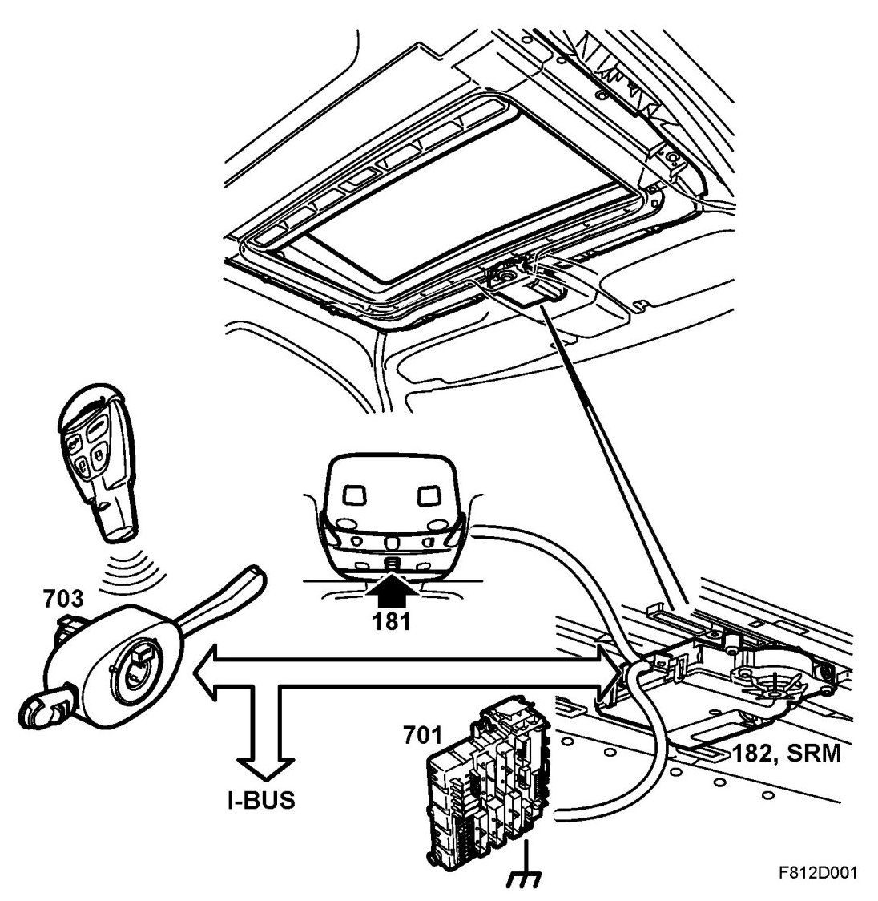

Brief Description
Brief Description
Overview
- Sunroof with components

- Module, (182)
- Switch (181)
- REC, rear electrical centre (701)
- CIM (703) (cars with pinch protection)
Description
The sunroof consists of a sunroof assembly with a glass hatch that is fixed on two lifting units. The cable-driven glass hatch is powered by an electric motor. The control module with motor is located on the front edge of the assembly. In addition, the glass hatch can be slid back and forth as well as tilted up at the rear.
When the back of the sunroof is opened, a spring-operated wind deflector on the front edge is lifted up. When closing, the sunroof pushes down the arms of the wind deflector, which folds down. Opening of the sunroof takes places by means of a 5-position or 3-position switch located in the roof console. The sunroof assembly is drained using four drainage hoses.